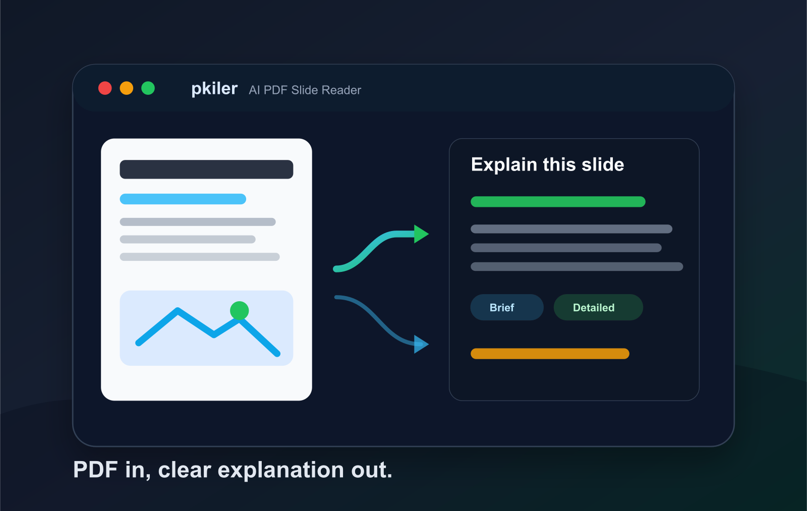

读图，而不是只读文字
先把 PDF 页面转成图片，再交给视觉模型分析版式、图表、公式和文字之间的关系，避免传统文本抽取丢掉页面语义。
Open-source AI PDF slide reader
把课程讲义、论文 slides 和技术报告拖进窗口，让视觉模型逐页读图、提炼重点、解释图表，再用你需要的深度输出讲解。
很多 PDF 幻灯片不是为自学者设计的：图表密、符号多、上下文缺失。pkiler 的重点不是简单摘要，而是把“看不懂的一页”转成可以继续学习的解释入口。
先把 PDF 页面转成图片，再交给视觉模型分析版式、图表、公式和文字之间的关系，避免传统文本抽取丢掉页面语义。
同一页可以用一句话概括，也可以展开成通俗解释或深入剖析，适合预习、复习和补背景知识。
既能逐页问“这一页在讲什么”，也能让模型通读整份 PPT，输出课程脉络、重点结论和易错点。
pkiler 把 PDF 阅读拆成四步：导入、解析、解释、回看。核心体验是让用户不用先理解材料，仍然能开始提问和建立结构。
把课程 slides、论文报告或技术文档拖进窗口，应用立即进入阅读状态。
后端使用 PyMuPDF 提取页面并转换为图片，为视觉模型保留排版和图表信息。
通过 OpenAI 兼容接口调用视觉模型，按简略、标准、详细三档输出解释。
把每页解释连接起来，形成整份材料的学习路线、主题关系和关键 takeaway。
pkiler 的模式不是“换个语气”这么简单，而是把同一页 slide 映射到不同学习阶段：扫一眼、真正理解、准备讲给别人听。
它是一个轻量桌面应用：Python 后端负责 PDF 处理和模型请求，浏览器式前端负责交互，SSE 负责把模型输出持续推到界面。
pkiler 更像一个坐在旁边的讲义助教。它不会只给出一段冷冰冰的摘要，而是把图里的关系、页内逻辑和整份材料的主线拆开说清楚。对于芯片、AI、论文组会、课程 slides 这类高密度材料，这个差别很大。

这不是一个“PDF 转文字”小工具，而是一套围绕学习体验组织起来的功能集合。
| 能力 | 当前实现 | 用户价值 |
|---|---|---|
| 逐页解读 | 把单页 PDF 转成图片并交给视觉模型分析。 | 适合卡在某一页时快速获得解释。 |
| 通俗模式 | 用更生活化的语言重写复杂概念。 | 帮助跨专业读者先建立直觉。 |
| 整体解读 | 汇总全套 slides，输出完整讲解。 | 适合预习、复盘和准备汇报。 |
| 可配置后端 | 通过环境变量配置 API key、base URL 和模型名。 | 同一套界面可以切换不同视觉模型。 |
如果继续演进，pkiler 可以从单机阅读器升级为真正的学习工作台。
记录用户反复不懂的概念，把后续解释自动调到更合适的背景深度。
为整份 PDF 建立章节、关键词和公式索引，让用户可以按主题回看。
把逐页解释、整体总结和用户追问导出为 Markdown 或复习笔记。
pkiler 的定位是一个可以自己掌控的学习工具：本地负责文件解析和界面，模型请求通过你配置的后端发出。
API key、base URL、模型名通过环境变量或配置文件管理，避免把私密信息写死进仓库。
只要兼容 OpenAI 风格接口，就可以把 MIMO、私有代理或其他视觉模型接进同一套界面。
PDF 页面会被转换为图片并发送给配置的模型服务；适合学习材料，不建议直接处理敏感文件。
pkiler 的价值在于它足够轻：本地跑界面和 PDF 处理，模型后端可以换。你可以把它改成论文阅读器、课程助教、组会工具，或者继续做成更完整的 macOS 学习应用。